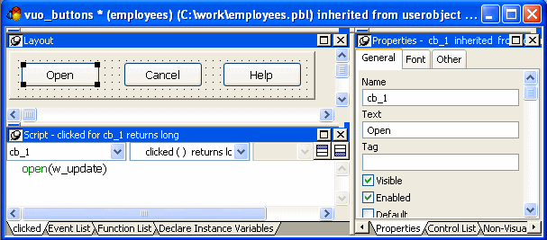

The User Object painter has five implementations, depending on the type of user object you are working with. It has several views where you specify how the user object behaves and, for custom visual and standard visual user objects, how it looks. For details about the views, how you use them, and how they are related, see "Views in painters that edit objects".
In this User Object painter for a custom visual user object, the Layout view and Script view have been arranged to display at the same time:

Most of your work in the User Object painter for visual objects is done in three views:
In the Layout view, you add controls to a visual user object in the same way you add controls to a window.
For information about specifying user object properties, see "Building a new user object ". For information about using the Script view, see Chapter 7, "Writing Scripts ."
You do not need the Layout and Control List views for nonvisual user objects, but otherwise, you use all the views that you use for visual objects.
Nonvisual user objects require no layout design work, but working in the User Object painter on the behavior of a nonvisual object is otherwise similar to working on the behavior of a visual user object.